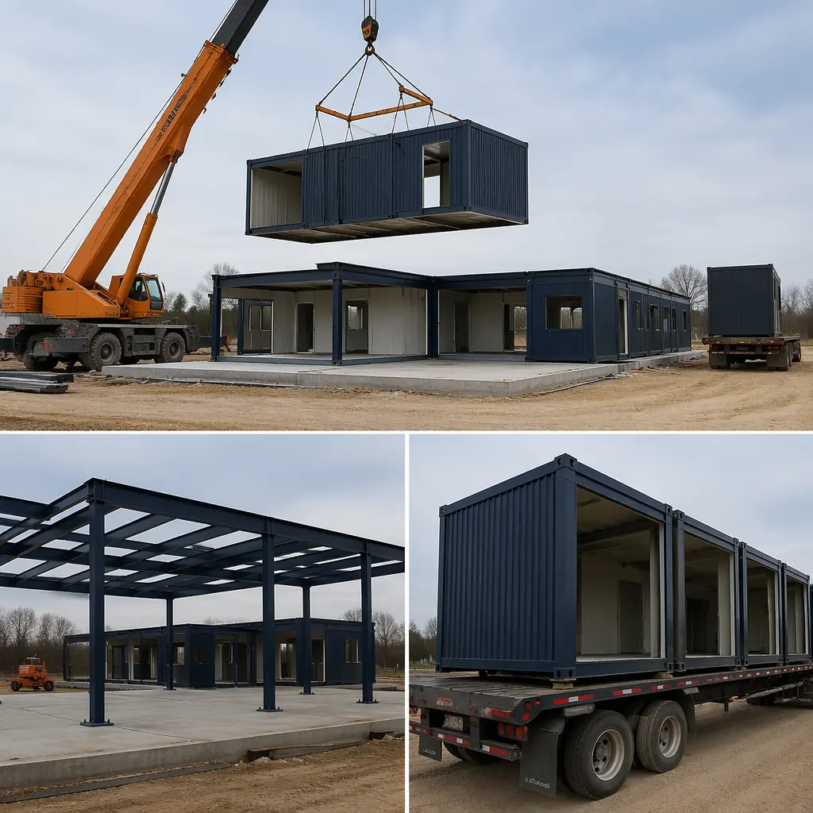
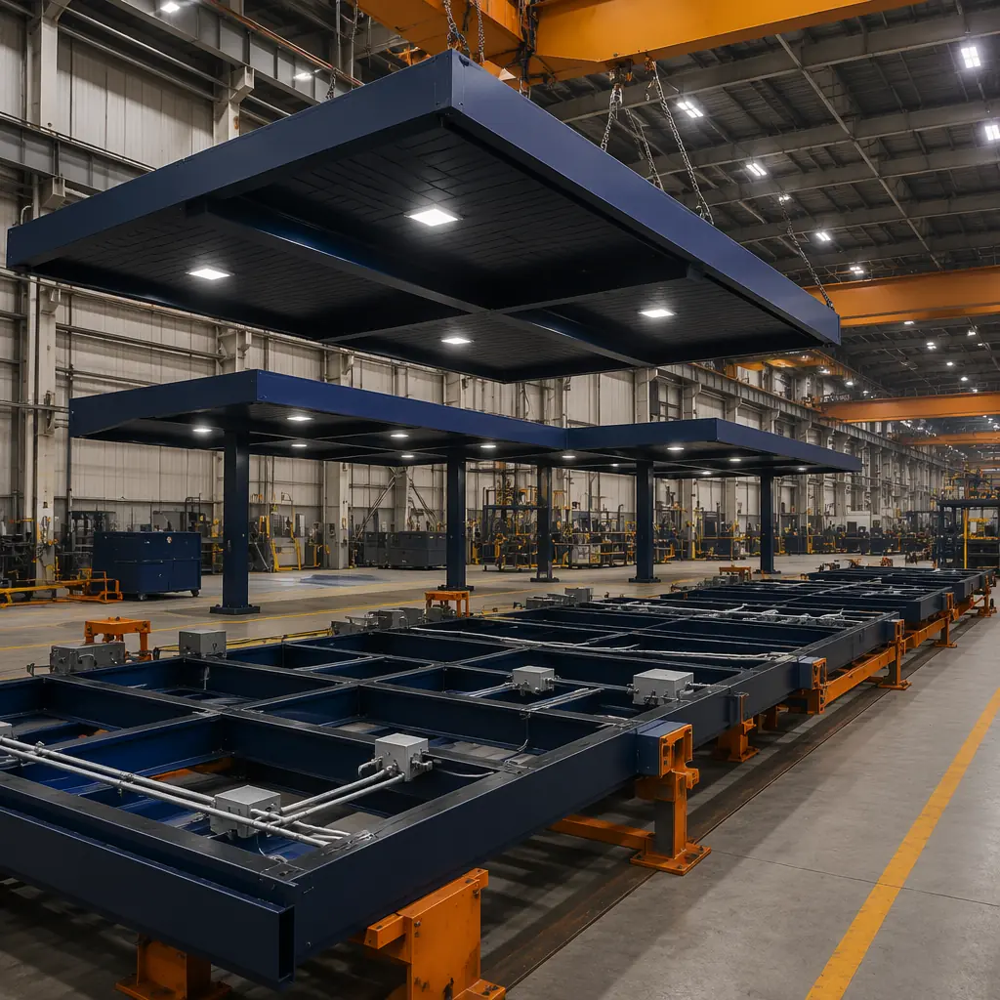
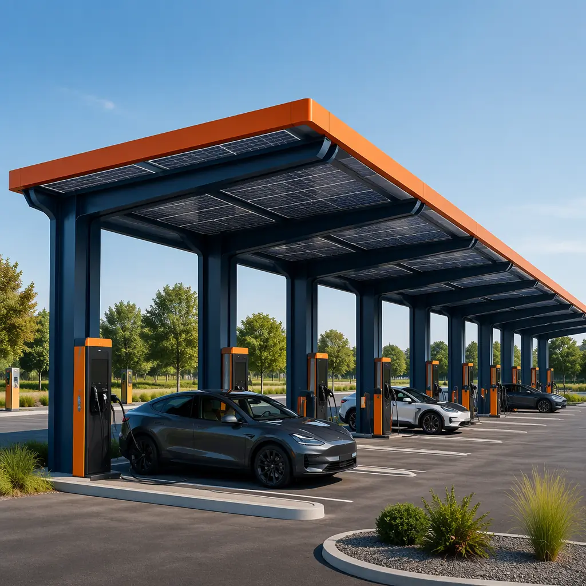
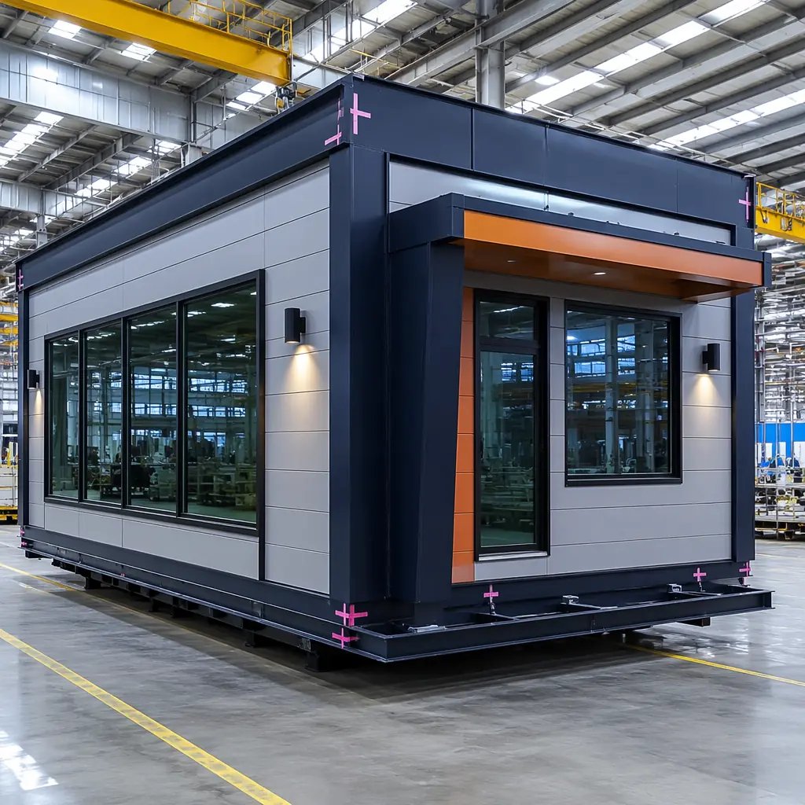
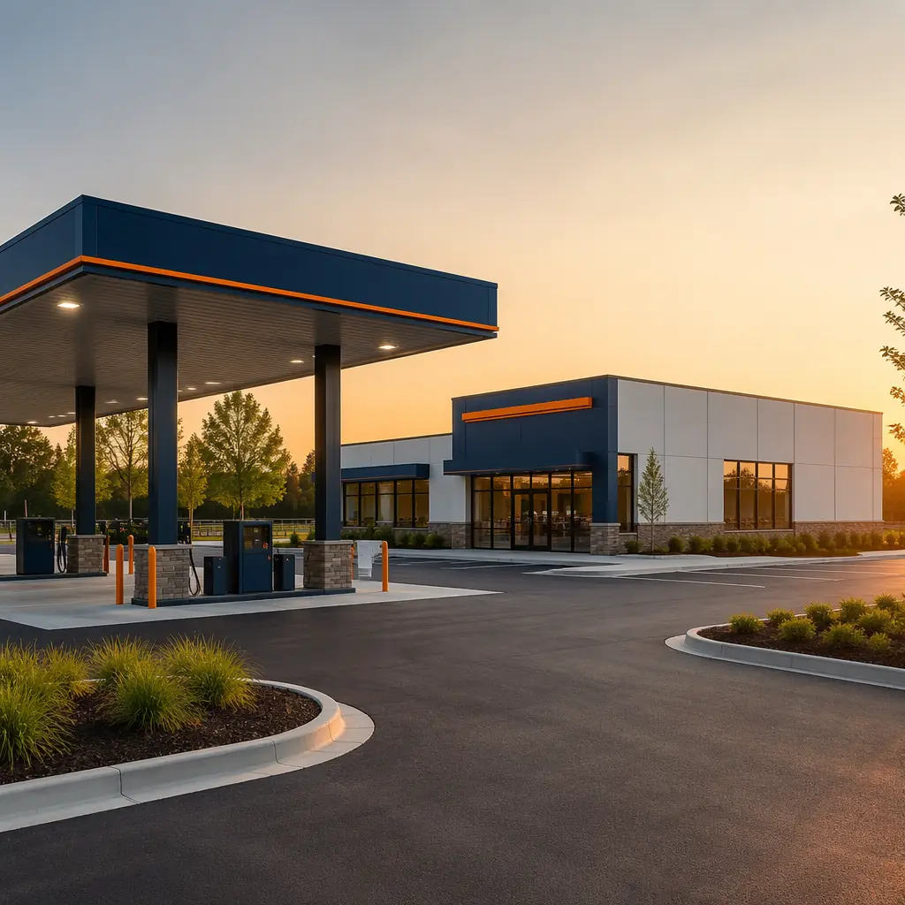

Approximately 185,000 retail fueling stations operate in the United States, with an estimated 35-40% requiring major renovation or replacement within the next decade due to aging underground storage tanks (USTs), outdated canopy structures, and accelerating EV charging integration. Traditional gas station construction takes 16-24 weeks from groundbreaking to fuel dispenser commissioning. Modular prefabricated fueling station construction compresses this to 8-12 weeks by manufacturing canopy structures, convenience store modules, and EV charging bays in a factory while site excavation and UST installation proceed in parallel. For a major fuel brand rolling out 20 station rebuilds per year, modular delivery recovers millions in accelerated forecourt revenue. With 60+ modular fueling stations already deployed by Shell, BP, and Circle K, the modular approach is proving that retail energy infrastructure can be built faster, safer, and at 30-40% lower total project cost than conventional methods.

The Modular Fueling Canopy: Prefabricated Steel Structures Engineered for Retail Energy
The fuel island canopy is the defining architectural element of any retail fueling station — and the single most schedule-critical component in traditional construction. A conventional canopy build follows an 8-10 week sequence of structural steel erection, decking, roofing, electrical rough-in, soffit finishing, and lighting commissioning. Every step is weather-dependent. Modular canopy construction compresses this entire sequence into a factory-built module that arrives on site as a single structural assembly:
- Clear span capability up to 48 feet: Modular steel canopy frames fabricated from ASTM A572 Grade 50 wide-flange beams with bolted moment connections accommodate 4-6 fueling positions with no intermediate columns. Factory-welded frames achieve dimensional tolerances of ±3mm across the full span, versus ±12mm typical for field-welded steel.
- Factory-installed lighting and electrical: LED canopy fixtures (120-160W, 14,000-18,000 lumens, 5000K) are pre-wired through rigid metal conduit to a factory-mounted junction box. Site electricians connect a single feeder circuit rather than wiring 12-18 individual fixtures from a scissor lift — saving approximately 120 electrician-hours per station.
- Explosion-proof electrical compliance: NEC Article 514 classifies fuel dispenser areas as Class I Division 2 hazardous locations. Modular construction installs all explosion-proof seal-offs, conduit bodies, and fixture housings at the factory. Every seal-off is factory-poured with Chico A compound and pressure-tested to 25 psi per NEC 501.15(C) before the module ships — eliminating the most common source of field inspection failures. Our analysis of modular construction fire safety and code compliance covers how factory-controlled electrical installation reduces defect rates across all building types.
- UL-listed fuel system components: Canopy modules can be factory-equipped with UL 87 dispenser mounting bases, UL 567 emergency shutoff valve brackets, and UL 2586 hose retractor anchor points — all installed to manufacturer-specified torque values with traceable quality records, rather than relying on field contractor variability.
A conventional canopy carries approximately $18,000-25,000 in weekly general conditions costs. Eliminating 6-8 weeks of canopy site work through modular delivery recovers $108,000-200,000 in general conditions savings alone — before accounting for accelerated fuel revenue. As detailed in our modular construction cost per square foot guide, these indirect savings frequently exceed the direct labor savings that most developers focus on.

Convenience Store Modules: Integrated Retail Operations in a Factory-Built Package
The convenience store is the profit engine of the modern fueling station. NACS data shows fuel generates 60% of station revenue but only 35% of gross profit — the remaining 65% comes from in-store merchandise, food service, and beverage sales. MODURA's modular c-store modules range from 2,400 to 4,800 square feet and arrive as substantially complete retail environments:
- Integrated POS infrastructure: Factory-installed low-voltage raceways, CAT6A data cabling, and recessed POS counter power/data boxes are pre-positioned for 2-4 checkout lanes. The structured cabling is factory-tested for continuity and certification before shipping, compressing a 2-week IT fit-out to 2-3 days on site.
- Walk-in cooler integration: The module floor includes a recessed 4-inch slab depression with factory-installed floor drain, condensate line rough-in, and dedicated 208V/30A circuit. The factory-applied continuous vapor barrier eliminates the thermal bridging that causes 70% of walk-in cooler condensation problems in site-built stores.
- Restroom pods: Self-contained units with FRP wall panels, epoxy-grouted porcelain tile flooring, and wall-hung fixtures on 16-gauge steel carrier frames. All plumbing is factory pressure-tested to 100 psi, reducing field connections from 25-35 individual fittings to 6-8 consolidated connections — an approach adapted from our modular bathroom pods for multi-unit construction.
- Food service rough-in: Factory-installed Type I grease duct chases, 3/4-inch hot/cold water lines sized for 6 GPM at 45 psi, and 208V three-phase power for cooking equipment. Food service operators install equipment in a clean, weathertight environment rather than navigating an active construction site.
The standard module is dimensioned for flatbed transport with inter-module joint systems for larger formats. This modularity enables fuel retailers to standardize their store program across sites with varying lot dimensions while maintaining identical interior layouts. Our coverage of modular retail construction explores how this standardization advantage applies across all retail formats.

EV Charging Canopies: Solar-Ready Infrastructure for the Electric Transition
A DC fast charger delivering 350 kW requires approximately 480V three-phase at 500 amps — equivalent to the electrical demand of a 30,000 sq ft office building at a single parking stall. When a station deploys 8-12 DC fast charging positions, total load can exceed 4 MW, requiring dedicated utility transformers. Modular EV charging canopies are engineered for these demands:
- Solar-ready steel frames: Canopy roof structures are designed for 5.0 psf additional dead load for photovoltaic panels per ASCE 7-22, with factory-installed Unistrut channels on 4-foot centers for solar racking. The 10-15° pitch optimizes bifacial panel performance at typical station latitudes while maintaining 14-foot clearance height per NEC 511.4. A 4,000 sq ft canopy accommodates a 60-80 kW DC solar array, offsetting 15-20% of charging load under peak conditions.
- Battery storage integration: A dedicated BESS enclosure zone with factory-installed conduit banks enables a 500 kWh LFP battery cabinet to peak-shave 150-200 kW during utility peak windows (4-9 PM), reducing annual electricity costs by $18,000-25,000. The factory-installed conduit eliminates trenching through an active forecourt — a retrofit costing $200-400 per linear foot.
- Forward-compatible structural design: Steel frames include 30% reserve capacity for next-gen megawatt charging system (MCS) equipment weighing 600-800 lbs, versus 350-450 lbs for current 350 kW dispensers. This aligns with the lifecycle approach documented in modular building maintenance and lifecycle cost analysis.
BP's "dual energy" station concept — combining 4 fuel dispensers and 6 DC fast chargers under a single 120-foot clear-span modular canopy — was deployed at 12 locations across the UK and Germany in 2024-2025, achieving 10-11 week deployment per station. As explored in modular construction transportation and logistics, delivering complete canopy modules to constrained urban sites is a decisive advantage over stick-built methods.

Underground Fuel Tank Coordination: The Site-Built Foundation Beneath the Modular Station
While above-ground components are factory-built, the UST system remains site-constructed — and coordinating this interface is the critical engineering challenge. A typical station deploys 2-4 double-wall fiberglass USTs (12,000-20,000 gallons each), connected through 300-500 linear feet of double-wall piping per EPA 40 CFR Part 280. The modular construction sequence coordinates this through precise dimensional control:
- Week 1-3: Tank pits excavated, USTs placed and ballasted, piping trenches dug. Dispenser sumps positioned via GPS survey referenced to factory-set canopy column coordinates, achieving ±1/2 inch alignment.
- Week 4-5: Piping pressure-tested to 50 psi with EPA tightness verification. Backfill compacted to 95% modified Proctor density under dispenser areas.
- Week 6-7: Concrete spread footings poured at canopy column and c-store module locations, with a 12-inch crawl space for utility connections.
- Week 8-9: Modules delivered by flatbed and craned into position. Dispensers set on pre-positioned sumps and connected via flexible connectors.
- Week 10-12: UST precision testing repeated post-placement. Fire marshal, health department, and building department inspections proceed concurrently.
MODURA performs a 3D laser scan of the completed UST installation (±2mm accuracy) and overlays this point cloud against the factory BIM model in Autodesk Navisworks. Dimensional conflicts are resolved before modules leave the factory — not discovered with a 40,000-pound module suspended 20 feet in the air. This BIM-to-field coordination, detailed in modular construction BIM and digital workflows, separates successful modular fueling station programs from those that encounter costly field rework.

ICC and NFPA 30A Compliance: The Regulatory Framework for Modular Fueling Stations
Fueling stations operate under IFC Chapter 23 and NFPA 30A, imposing requirements on construction materials, electrical classification, ventilation, spill containment, and emergency shutdown. Modular construction satisfies these through factory-controlled quality assurance rather than field inspection alone.
Structural Fire Resistance: IFC Section 2306
IFC 2306.2 requires buildings at motor fuel dispensing facilities maintain minimum 10-foot separation from dispensers. Modular c-store modules use 1-hour fire-resistance-rated exterior walls (5/8-inch Type X gypsum on 6-inch steel studs with mineral wool insulation, tested per ASTM E119) where walls are within 10-20 feet of dispensers. The UL-designated assembly is factory-installed with certified documentation rather than relying on field interpretation.
Electrical Classification: NFPA 30A Chapter 7 and NEC Article 514
The three-dimensional hazardous location zone around dispensers is addressed at the modular design stage: all conduit routing, fixture placement, and junction box locations are pre-coordinated against classification envelopes. Factory records document every explosion-proof seal pour with date, technician ID, and pressure test result — documentation fire marshals increasingly expect at plan review for multi-station programs.
Emergency Shutdown: NFPA 30A Section 6.7
Modular stations pre-wire the 24VDC supervised emergency stop circuit with break-glass stations at each dispenser island and cashier station, function-tested at the factory and again after site connection. This dual-test approach satisfies the growing fire marshal expectation for both factory and field verification of safety systems.
The modular compliance documentation package — compiling every UL listing, fire-rated assembly test report, and factory pressure test record — reduces plan review durations by 3-4 weeks compared to site-built stations where documentation is assembled ad hoc from subcontractors. As shown in modular construction permitting and zoning, factory documentation is one of the most underappreciated advantages of the modular approach across regulated building types.
Real-World Deployment Data: 60+ Modular Fueling Stations and Counting
As of mid-2026, more than 60 modular fueling stations have been deployed globally, providing statistically significant performance data:
- Shell: 18 modular stations across the UK, Netherlands, and Germany (2023-2025). Average construction: 10.8 weeks vs 21.3 weeks conventional — a 49% reduction consistent across urban, suburban, and highway locations. Post-occupancy evaluation showed 12% lower annual maintenance costs, driven by reduced canopy roof leaks and lower electrical fault rates.
- BP: 22 "dual energy" modular stations (2024-2026). Average project cost of $1.85 million per station vs $2.75 million site-built — a 33% reduction from 3,200 site labor hours (vs 7,500 conventional) and elimination of temporary fueling facilities during construction.
- Circle K: 12 modular stations in US Southeast and Southwest (2024-2025). Their 4,200 sq ft store delivered as two-module assembly achieved 11.4 weeks average from mobilization to opening vs 24.5 weeks conventional. Schedule reliability was 97% (within 1 week of planned date) vs 68% for conventional builds — the single most valuable metric cited by their real estate team.
- Regional operators: An additional 12+ stations delivered across Southeast Asia, the Middle East, and Africa. A 3-station program in rural Indonesia achieved 14 weeks per station vs 31 weeks for a previous conventional build delayed by skilled labor shortages and monsoon conditions.
The aggregate data establishes a clear baseline: modular fueling stations deploy in 50-60% of conventional timeframes, with 30-40% lower total project costs. Factory quality control reduces post-occupancy defect rates by approximately 60% in the first three years. These outcomes mirror the program-level advantages documented across modular industrial warehouse construction and modular data center deployment.

The retail energy sector is at an inflection point. Fuel margins compress as EV adoption accelerates, and the traditional gas station business model evolves toward a combined fuel + electric + convenience + food service format demanding faster, more capital-efficient construction. Modular prefabricated fueling stations — with factory-built canopies, integrated c-store modules, and solar-ready EV charging structures — match the speed, quality, and cost imperatives of this transition. For fuel retailers planning station rebuild programs or dual-energy format rollouts, MODURA brings 500+ completed modular projects across 18 countries and 4 ISO 9001/14001 certified factories. Contact our commercial team for a free feasibility assessment including timeline analysis, modular build program options, and cost comparison tailored to your station format.